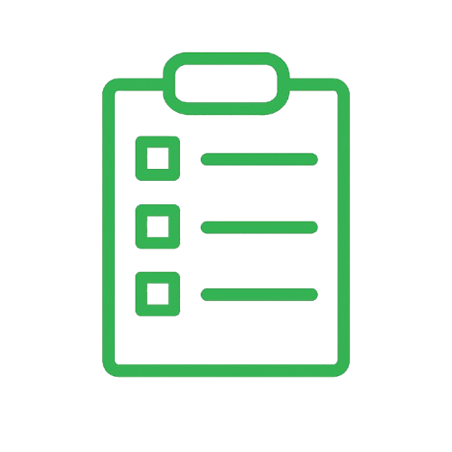
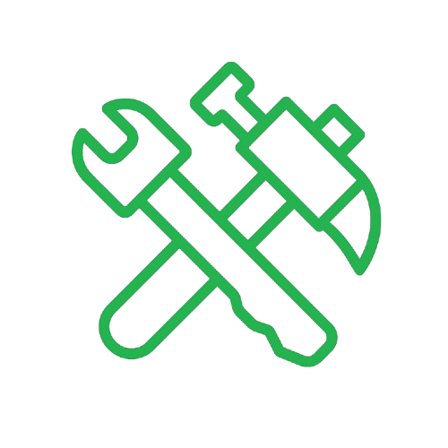

Seja bem-vindo ao nosso site de ferramentas utilitárias, criado para tornar o seu dia a dia mais prático, organizado e eficiente. Aqui você encontra soluções simples e funcionais para tarefas cotidianas em um só lugar. Nosso objetivo é oferecer ferramentas acessíveis que economizem seu tempo e facilitem sua rotina, seja no trabalho, nos estudos ou nas atividades pessoais.
Conheça nossa ferramenta de Tasklist, desenvolvida para ajudar você a organizar suas tarefas de forma simples, rápida e eficiente. Com ela, você pode criar, gerenciar e acompanhar suas atividades do dia a dia em um só lugar, garantindo mais foco e produtividade.
Apresentamos nossa ferramenta de monitoramento de gastos, ideal para quem deseja ter mais controle e clareza sobre suas finanças. Com uma interface intuitiva e recursos práticos, você pode registrar suas despesas e acompanhar sua evolução financeira em tempo real.
Estamos trabalhando para proporcionar a ferramenta ideal para sua rotina!
